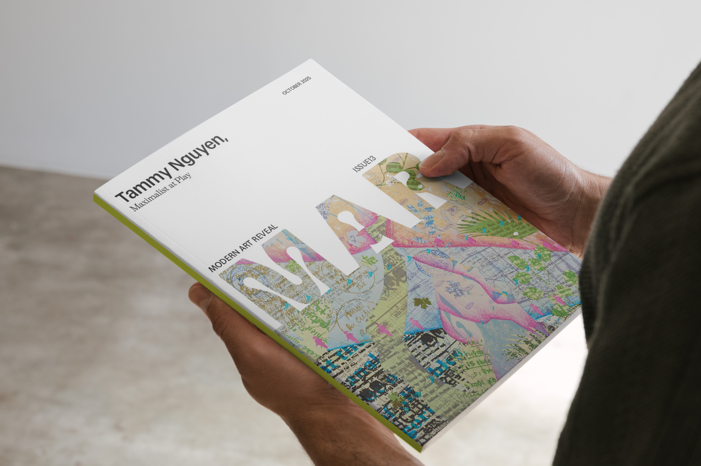
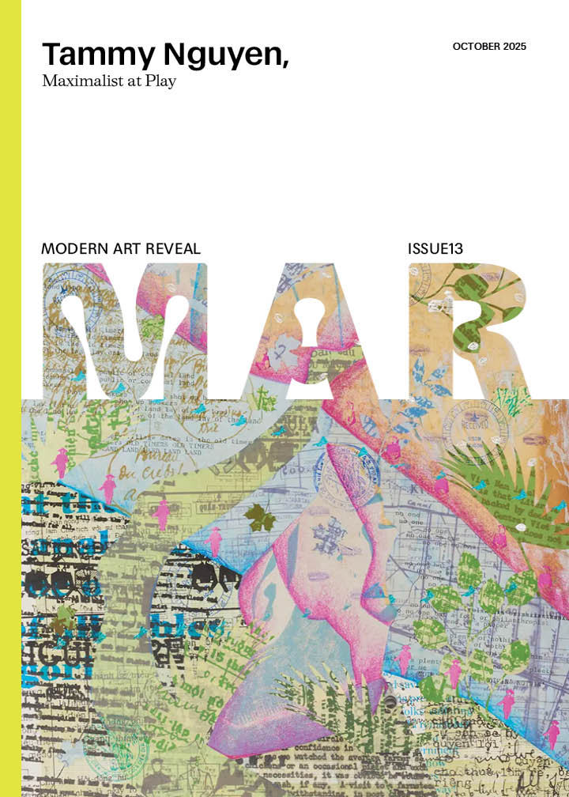
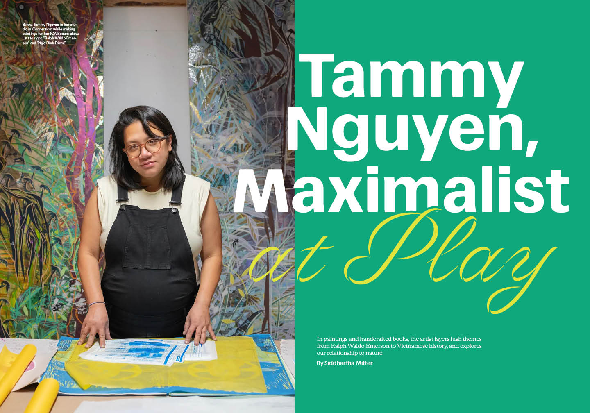
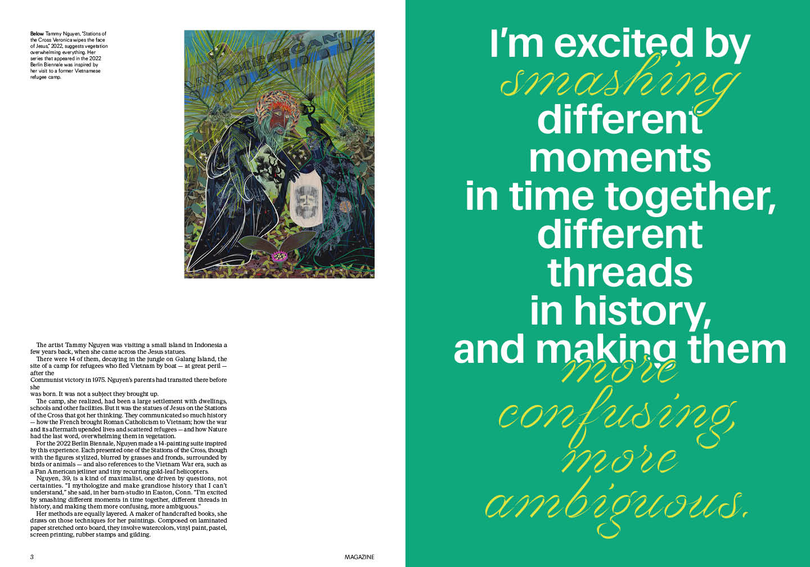
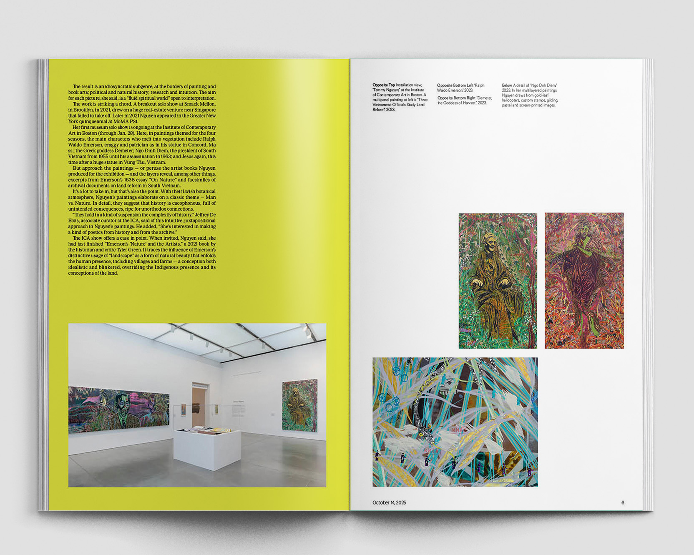
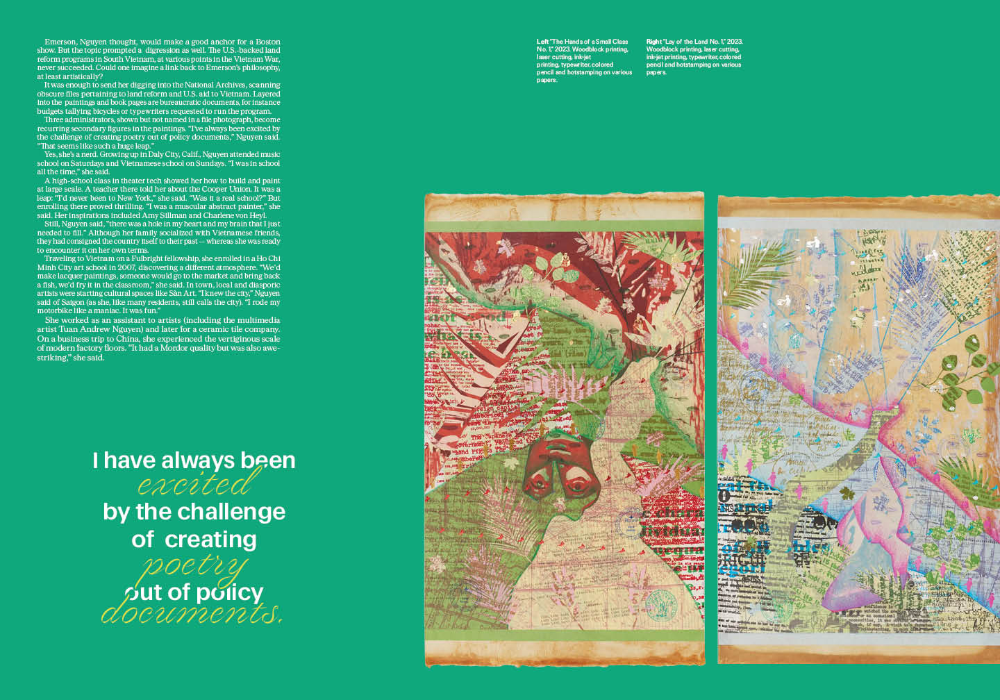
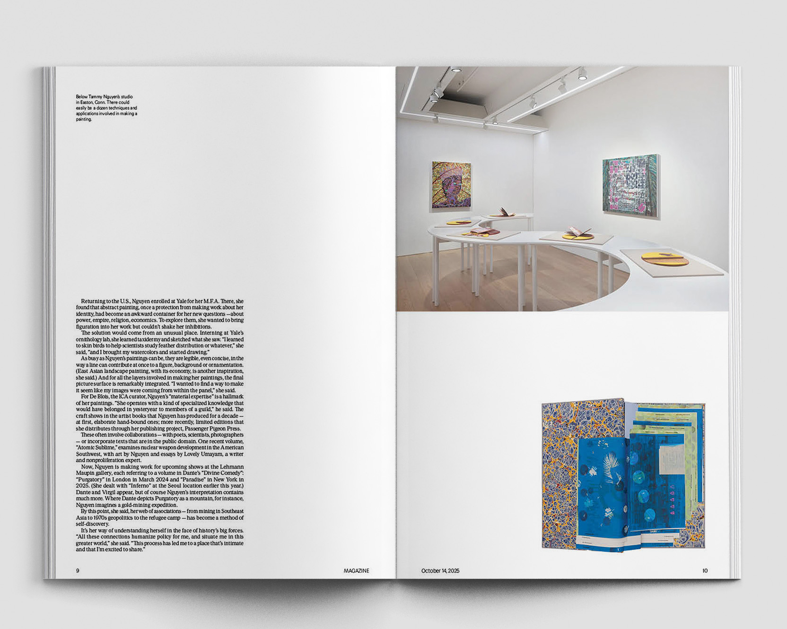
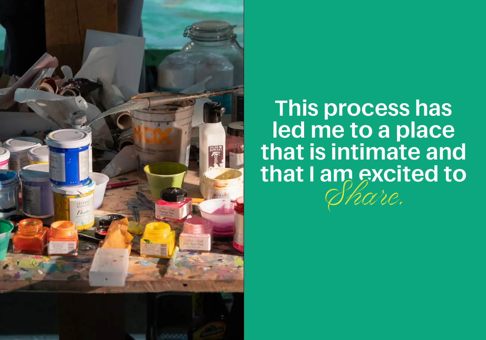

MAR (Modern Art Reveal) Magazine
MAR magazine is a publication designed to make contemporary art feel accessible and inspire readers to visit exhibitions. For the October 2025 issue, I designed a feature article on artist Tammy Nguyen. Drawing from her vibrant use of color and her exploration of the relationship between humans and nature, I chose green and yellow-green as the main colors to evoke a sense of botanicals. I also used Volina, a script typeface by Dalton Maag, to capture the excitement she feels in her practice — those moments when different eras and histories collide, boundaries dissolve, and everything becomes beautifully ambiguous.
RoleDesign
FieldEditorial
TypefacesFocal Maxi by Commercial, Volina by Dalton Maag, Serriff by Displaay Type Foundry
PublishedOctober 2025






